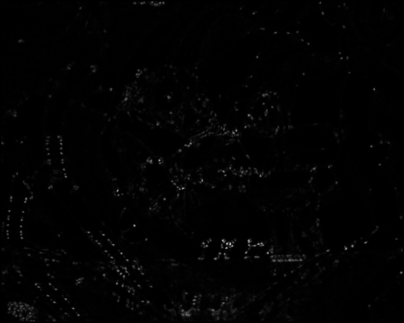
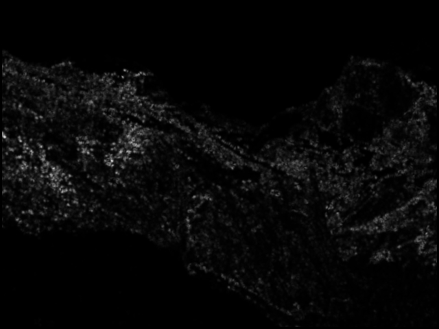
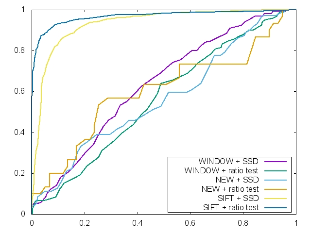
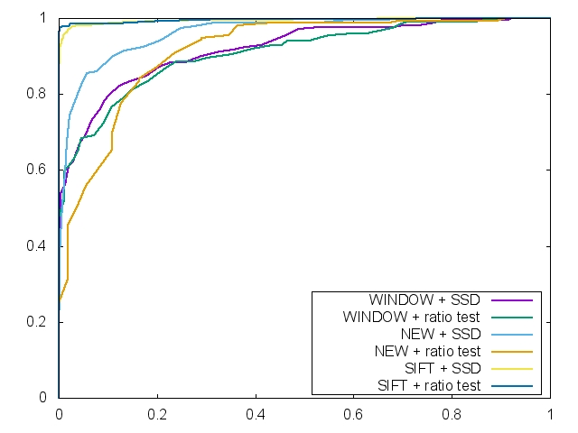
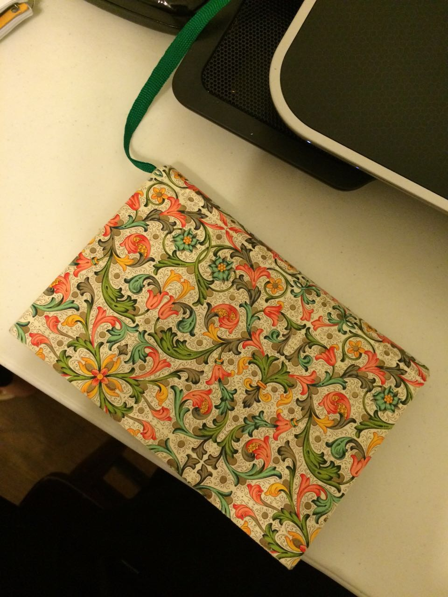
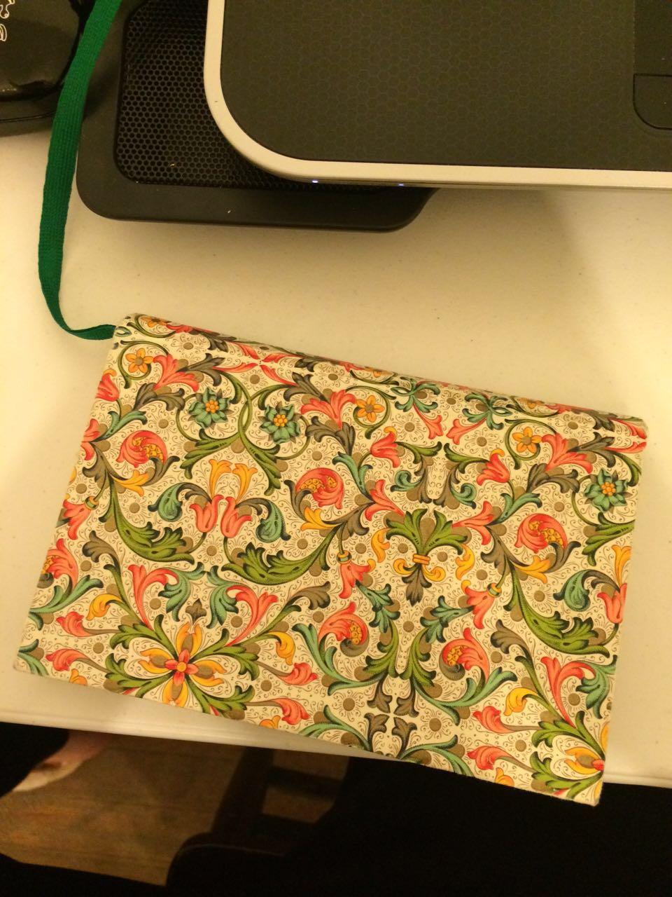
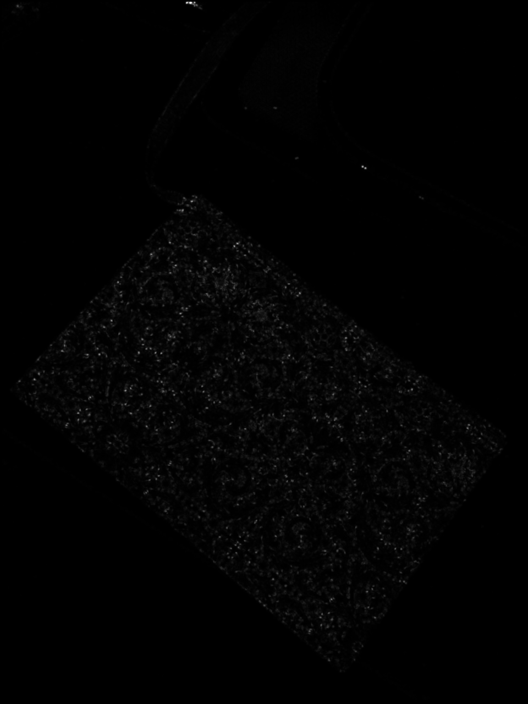
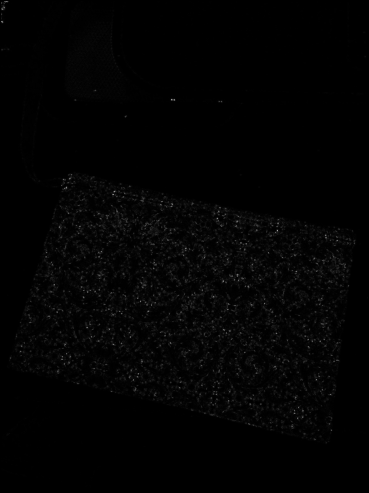
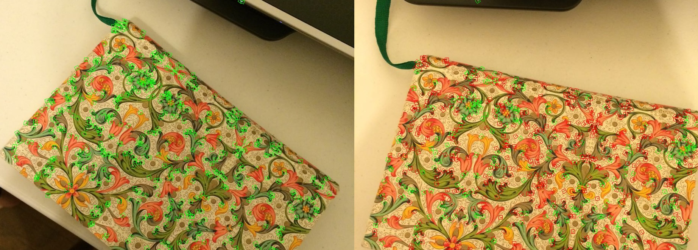

Project 1 : Feature Detection and Matching Ding yiheng 02/01/2015
1.Feature Detection
Feature detection contains three steps, (1) first
to calculate the gradient, which is the derivative in x and y
directions of a pixel, I use sobel operator to get this, (2)
compute the harris matrix for each pixel so that we can generate the
harris operator to indicate how good or bad a feature is .(3)the last
step is to filter all the useless points with low harris value by using
threshold and get the local maximum in each pixel's eightborhood.
The thing will varied from each circumstance is
two parameters, the sigma of gaussian and the threshold of filtering
the bad features. The gaussian matrix is
used to do a convultion with detected point's 5*5 neighborhood to give
weight of each harris matrix, the closer to the feature point ,the more
important the value is. The sigma value determine how fast the weight
go down from center to the margin of gaussian mask and we need it to be
optimized.The value chosen by me is 1.25 because it works well. I try
2.00,1.5,0.5,0.8, they mess things up, so.
The second thing is threshold ,the point with value below it be
filtered out, this value should be seperately adjust and chosen for
each different pictures, as my own experience, even a piture is just
slightly rotated from another one, the threshold will be different if
you want to find same number of features.The healthy number of features
is about 500, more or less both are bad.
2.Feature Description
Beside the easy-to-implement 5*5 window
descriptor, I choose the simplified sifi descriptor which contains the
rotation-invariant feature. When a
feature is detected, firstly, calculate the eigenvalue by using harris
matrix to determine the orientation of this feature, so ,by the
original method ,we take a vertical-horizontal 16*16 matrix to be the
descriptor matrix, and now ,given the eigenvector's direction , rotate
the 16*16 to that direction, and each coordination will result in a
non-integer coordination, so we interpolate the gray level by taking
the nearest square shaded four points into consideration, which is
called bilinear.and then, get the derivative of each point and store
the angle between this vector and eigenvector. By dividing the 16*16
matrix into 16 parts, and each part contains a 8 directions histogram
indicating the module and number of each pixel, in other word , a 128
dimensional vector to describe the feature, which is rotation invariant.
3.Feature Matching
The projetc already give us the SSD which
don't need any modification and I implemented the ratio matching just
by testing the ratio between the best result and second result, so we
also need a threshold here, and of course, varied from different
matching images.
4.Performance (1)harris Image
 
harris value image of graf
harris value image of Yosemite
(2)ROC

roc of graf
roc of
Yosemite
(3)AUC here is the auc of my program running on the benchmark images.
But there are some problem I don't
understand, if I run program for each match and generate the auc,they
look good, but by using benchmark command, somewhere has result showing
below,-1.#IND0000.
window+ssd
window+ratio
newMethod+ssd
newMethod+ratio
bikes
0.414296
0.391344
0.436545
0.01
graf
0.627643
0.565495
0.01
0.01
leuven
0.01
0.01
0.689625
0.64565
wall
0.610628
0.608995
0.36082
0.01
5.Strength and Weakness 1.my feature detection is excellent, the feature points can be correctly detected in each situation. 2.my descriptor is rotation invariant.
3.But my descriptor doesn't take consideration of scale
and exposure invariant and can't deal with affine transformation. 6.My own Images
  
7.Extra credit My code has implemented the rotation invariant descriptor, the difference represented in roc showing below: